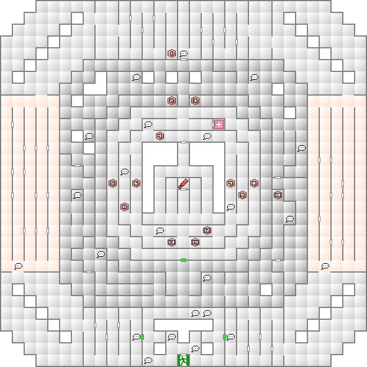

シナリオ進行に関係無いが、香が2つ入手できるのでクリアしておきたい。VRパークへはDISC2中盤まで進入することができる。
中央エリアには新月時にしか入れないので、月齢を調整して進むこと。マッパーが使えないゾーンは、一番東の通路に入って垣根を飛び越えていけば突破できる。
パーク内には多数の宝箱が設置してあるが、香が入った箱は全て中央エリアにだけ存在する。
| 能力 | LV30 HP2737 MP302 力08 知07 魔11 耐06 速12 運03 |
|---|---|
| 特技 | マハ・ラギオン 悪魔の産声 ネクロ・ドグマ バリアントダンス |
| 臭い息 |
| 火炎 | 氷結 | 電撃 | 衝撃 | 破魔 | 呪殺 | 万能 |
|---|---|---|---|---|---|---|
| 精神 | 神経 | 魔力 | 打撃 | 斬撃 | 技 | 銃撃 |
| 100 | 50 | 50 | 50 | 無効 | 無効 | 100 |
| 無効 | 無効 | 無効 | 50 | 100 | 200 | 50 |
妖樹アルラウネを3体従えている。アルラウネを全て倒すと2回行動に加えてマハ・ラギオンを使用してくるようになる。事前に補助魔法、特にラク・カジャはしっかりかけておくこと。

黒い床：ダークゾーン（マップ非表示）。
中央やや南の緑のゲートは新月時のみ開く。